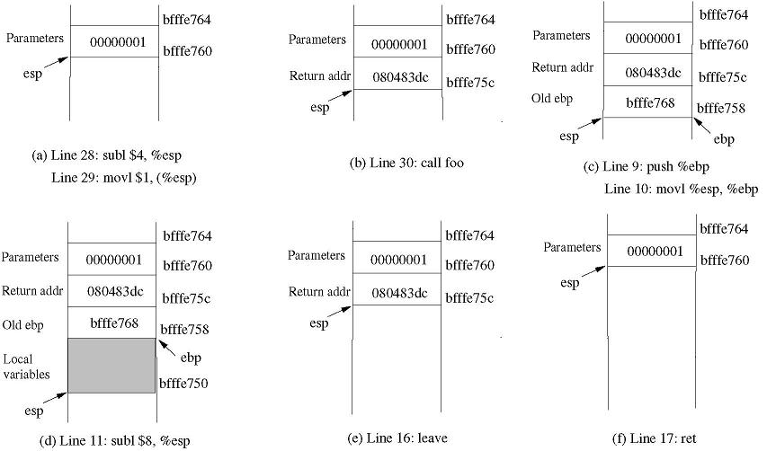

Lab 2: Return-to-libcLab OverviewIn this lab, you'll explore how to defeat the protection mechanisms introduced to counter buffer overflows. The first type of countermeasure is non-executable stack, which will mark the stack memory segment, along with other segments, non-executable. Thus, even the shellcode jumps back to the stack, it has no chance to execute. To defeat this protection mechanism, you will study and use a specific technique called return-to-libc, a special and easy form of return-oriented programming. By using return-to-libc, shellcode can jump to any library code (or any executable code).The second type of countermeasure is memory address layout randomization (ASLR). The key idea of ASLR is to set random addresses for specific memory segments of a given process. Thus, it will be very difficult for an adversary to know the exact address of a buffer. To defeat this protection mechanism, the adversay can guess the starting address of a buffer and attack the server brute-forcely. This is rather realistic, because the range of the stack is relatively small. The third type of countermeasure is a canary. In its simplest form, a canary is an integer on the stack (after the buffer), by checking whether or not a canary is altered, one can check whether or not the buffer is over flowed, just before the function returns. To defeat this, an adversary can just guess the value of the canary. At a first glance, this will be very hard, if not impossible, because the value space is dramatically huge: 232. However, you will understand that under some circumstance, say a web server like Touchstone, it will be very practical. An adversary only need to guess just 1024 times to succeed. This lab consists of three parts:
Lab EnvironmentDownload this code to start with. In the first two parts of this lab, you will first disable ASLR:
$ su root
Password: (enter root password)
# sysctl -w kernel.randomize_va_space=0
In the third part of this lab, you'll turn on ASLR.
Part A: PhishingGenerally, Phishing attempts to acquire sensitive information such as username, password, and credit card details (and sometimes, indirectly, money) by masquerading as a trustworthy entity in an electronic communication. In this lab, you'll design and implement a simple form of Phishing. Tobe specific, you (acting as the malicious attacker) will construct a web server which produces malicious HTTP responses. Thus, when a vitim visits your web server, the victim's browser will be attacked: the browser will be crashed, or the victim's computer will even be taken over.Exercise 1. First, read the browser's source code, find out at least one buffer overflow vulnerability. Describe briefly how this vulnerability can be exploited. Now read the web server's source code, locate the key code snippet which sends response to the browser, how can you change the code to crash the browser with the above vulneralibity? Implement your idea. Don't forget to test your code to make sure the malicious web server works as expected. Just like overflowing the web server, one can do much more serious attacks during phishing: say, popping up a remote shell, unlinking a file, stealing sensitive files, etc.. Exercise 2. Use the techniques studied in the lab 1 to attack the browser. The basic requirement is to unlink (delete) some file on the machine running the browser. Further, you can pop up a remote shell or open a socket, etc.. Challenge! The browser you've been using so far is very simple: basically, it can only read reponse from the web server (as a sequence of characters). A real-world browser tends to be more complex: besides reads response, it also renders html, run JavaScript engine, perfrom various security checking, etc.. So this means that a real-world browser tends to contain more vulnerabilities. So you can investigate how to attack real-world browsers using the knowledge you've learned. You can browse through the known vulnerabilities on CVE, and you can use some tools like metasploit to make the work of creating shellcode simpler. Part B: Non-executable Stack and Return-to-libc AttackTo counter buffer overflows, many modern operating systems introduce non-executable stack by marking the stack memory segments non-executable. On old OS, this is achieved by setting up the CS segment register; and modern architecture introduce the NX bit in the page table to help OS manage execution permission. In this part of the lab, you will explore how this protection mechanism can be circumvented.Exercise 3.
The Ubuntu 12.04 OS you've been using in this lab has
the non-executable stack support
by default. To compile a C program, just use the
$ gcc -z noexecstack stack2.cperform a buffer-overflow attack, can you succeed any more? What do you observe? The key observation to exploiting buffer overflows with a non-executable stack is that even though you cannot jump to the address of the overflowed buffer (it will not be executable), there's usually enough code already in the vulnerable program's address space to perform the operation you want.
Thus, to defeat a non-executable stack, you need to first find
the (binary) code you want to execute. The most straightforward way
is often to find out a function in the
standard library, say libc. There are many useful functions
in these library, such as Understand the StackTo know how to conduct the return-to-libc attack, it is essential to understand how the stack works. We use a small C program to understand the effects of a function invocation on the stack.
/* foobar.c */
#include <stdio.h>
void foo(int x)
{
printf("Hello world: %d\n", x);
}
int main()
{
foo(1);
return 0;
}
We can use "gcc -S foobar.c" to compile this program to the assembly code. The
resulting file foobar.s will look like the following:
......
8 foo:
9 pushl %ebp
10 movl %esp, %ebp
11 subl $8, %esp
12 movl 8(%ebp), %eax
13 movl %eax, 4(%esp)
14 movl $.LC0, (%esp) : string "Hello world: %d\n"
15 call printf
16 leave
17 ret
......
21 main:
22 leal 4(%esp), %ecx
23 andl $-16, %esp
24 pushl -4(%ecx)
25 pushl %ebp
26 movl %esp, %ebp
27 pushl %ecx
28 subl $4, %esp
29 movl $1, (%esp)
30 call foo
31 movl $0, %eax
32 addl $4, %esp
33 popl %ecx
34 popl %ebp
35 leal -4(%ecx), %esp
36 ret
Calling and Entering foo()Let us concentrate on the stack while calling foo(). We can ignore the stack before that. Please note that line numbers instead of instruction addresses are used in this explanation.

Line 28-29:
These two statements push the value 1, i.e. the argument to the
Line 30:
Line 9-10:
The first line of the function
Line 11:
Leaving foo()Now the control has passed to the functionfoo().
Let us see what happens to the stack when the function returns.
Line 16:
mov %ebp, %esp pop %ebpThe first statement release the stack space allocated for the function; the second statement recover the previous frame pointer. The current stack is depicted in Figure(e).
Line 17:
Line 32:
Smashing the StackRead the virtual file/proc/pid/maps on your
machine (pid is the process id) you can find
and locate the key library such as
libc-2.15.so, which contains many useful functions. The
key function you may use to attack the target may be system(),
unlink() and so on.
Exercise 4.
Use gdb to smash the function stack, the C program offered you here
is
$ gcc exec3.c -o exec3 -fno-stack-protector -z noexecstack -g
$ gdb -q exec3
Reading symbols from exec3...done.
(gdb) b fun
Breakpoint 1 at 0x8048423: file exec3.c, line 6.
(gdb) r
Starting program: /home/seed/sand-box/exec3
Breakpoint 1, fun () at exec3.c:6
printf("Return to fun!\n");
(gdb) p system
$1 = {
As you can see, the command system("ls")
constructed by gdb
runs smoothly, but not perfect. What triggered the "SIGSEG"
fault? Modify the process memory in gdb just likeabove, to
to let the process exit gracefully.
Ret-to-libc AttackTill now, you already know how the function call stack is organized and how to find the library function address. So you can try to attack the Touchstone web server using ret-to-libc.Exercise 5. First, compile the Touchstone webserver: $ make $ ./touchstoneNow, try to perform a return-to-libc attack by contructing and sending a malicious request containing your shellcode. Your shellcode can still delete a file from the web server, or can do something else. Challenge!
The Part C: Address Space Layout RandomizationAddress space layout randomization is a technique used to fortify systems against buffer overflow attacks. The idea is to introduce artificial diversity by randomizing the memory location of certain system components. This mechanism is available for both Linux (via PaX ASLR) and OpenBSD.ASLRRandomizing the memory-address-space layout of software has recently garnered great interest as a means of diversifying the monoculture of software. It is widely believed that randomizing the address-space layout of a software program prevents attackers from using the same exploit code effectively against all instantiations of the program containing the same flaw. However, as you'll do in this part, it's not hard to defeat ASLR, at least on 32-bit systems.Now, turn on the Ubuntu's address space layout randomization:
$ su root
Password: (enter root password)
# /sbin/sysctl -w kernel.randomize_va_space=2
Exercise 6. After turning on the ASLR, compile the Touchstone web server: $ make all $ ./touchstonetry to attack the webserver using buffer overflow. Can you succeed? Where is the buffer's address? Is it exploitable? Brute-force AttackTo defeat ASLR, we can use the Brute Force attack technique, which is simple but effective in guessing the variable buffer address. The basic idea is that although we don't know the exact address of the buffer, however, we know its range, say, from0x00000000 to 0xbfffffff. So, by
trying each address in turn, we'll hit the right address
sooner or later.
Exercise 7. After turning on the ASLR, compile the Touchstone web server: $ make all $ ./touchstoneSend a request to the server containing the guessed address, repeating this process until you succeed. (Hint: think carefully the possible address of the buffer (hence the stack). Is every address between 0x00000000 to 0xbfffffff
possible? Is every address in the given stack a candidate for
the buffer address? Answering these questions as precisely
as possible will speed up your brute-force attack dramatically.)
Challenge! Turn on ASLR, enable non-executable stack, enable stack canary, and perform buffer overflow attack on the Touchstone web server. Do you have any chance to secceed? If yes, how? (We have succeeded!) HandinThis completes the lab. Remember to hand in your solution to the information system. |